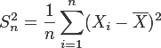

| Pre µubovoµnú náhodnú premennú X s varianciou σ2 platí: ©tatistika varianciou σ2 platí: ©tatistika

je nevychýlenou odhadovou ¹tatistikou pre varianciou σ2 náhodnej premennej X. |
| 3 z 3 b. |
| Mana¾ér
istého hotela sa obáva, ¾e v poslednom èase klesol objem slu¾ieb,
ktoré si hostia u nich objednávajú. Stredná hodnota úètu
odchádzajúceho hos»a zvykla by» 250 €. Realizácia náhodného výberu
medzi 60 nedávnymi hos»ami ukázala výberový priemer
235 € a výberovú smerodajnú odchýlku 50 €. Na hladine
významnosti α = 0.05 testujte hypotézu Ho: μ ≥ 250 proti H1:
μ < 250 a rozhodnite o oprávnenosti obavy hotelového
mama¾éra. Konkrétne, vypoèítajte hodnotu testovacej ¹tatistiky
(zaokrúhlenú na 3 desatinné miesta), nájdite kritickú (tabuµkovú)
hodnotu a rozhodnite o prijatí alebo zamietnutí
hypotézy Ho. |
| 4 z 4 b. |
| Nech je rozdelenie pravdepodobnosti náhodného vektora (X, Y) dané tabuµkou
|
X\Y
|
-1
|
0
|
1
|
|
1
|
0.03
|
0.18
|
0.02
|
|
2
|
0.13
|
0.55
|
0.09
|
Vypoèítajte kovarianciu náhodného vektora (X, Y), t.j. cov(X, Y). Nezaokrúhlujte.
|
| 0 z 4 b. |
| Pre strednú kvadratickú chybu MSE(h) µubovoµnej ¹tatistiky h(X1, X2, ..., Xn) s varianciou var(h) je var(h) ≥ MSE(h). |
| 0 z 3 b. |
| Pre µubovoµné dve udalosti A, B platí: P(A B) P(A) + P(B) |
| 2 z 2 b. |
| ®ivotnos»
zariadenia v rokoch je náhodná premenná X s exponenciálnym
rozdelením s parametrom λ =
0.25. Vypoèítajte strednú hodnotu náhodnej premennej Y =
3X2 - 2X + 1.
|
| 0 z 4 b. |
| Automatická
plniaca linka plní konzervy s mno¾stvom náplne (uvedeným na
etikete konzervy) 1500 g. Skutoèné mno¾stvo náplne je náhodná
premenná, ktorá má normálne rozdelenie so strednou (nominálnou)
hodnotou μ a smerodajnou odchýlkou 9 g. Ako treba
nastavi» nominálnu (strednú) hodnotu μ mno¾stva náplne, aby
len 0.6% konzerv obsahovalo menej ne¾ 1500 g náplne? |
| 4 z 4 b. |
| Pravdepodobnos»,
¾e stromèek istého druhu, urèený na zalesòovanie, sa ujme, je
0.64. Pou¾ite aproximáciu normálnym rozdelením bez korekcie
a vypoèítajte aký poèet n stromèekov treba
vysadi», aby sa s pravdepodobnos»ou 0.9 ujalo
aspoò 10000. |
| 4 z 4 b. |
| Pre µubovoµné dve udalosti A, B platí:
Ak A, B sú disjunktné a nezávislé, tak P(A) = 0 a P(B) = 0. |
| 3 z 3 b. |
| ©tyri
po¹tové holuby boli vypustené, ka¾dý so svojou správou.
Pravdepodobnos», ¾e i-ty holub doruèí správu je 1 - 0.1i
a doruèovanie je totálne nezávislé. S akou pravdepodobnos»ou
práve dva z holubov doruèia správu? (Nezaokrúhlujte!) |
| 4 z 4 b. |
| X je náhodná premenná so strednou hodnotou μ a smerodajnou odchýlkou σ = 40. Pomocou testovacej ¹tatistiky
T100 = (X1 + X2 + ... + X100)/100 testujeme hypotézu H0 : μ = 330 proti H1 : μ = 317 tak, ¾e definujeme kritickú oblas» W = {(x1, x2, ..., x100) ∈ R100 : T100 < 320}. Vypoèítajte hladinu významnosti α tohto testu. |
| 4 z 4 b. |
| Pre
µubovoµné dve náhodné premenné X, Y so strednými hodnotami
platí: Ak E(XY) = E(X)E(Y), potom X, Y sú
nezávislé. |
| 0 z 3 b. |
| Pre µubovoµné dve udalosti A, B platí:
Ak P(A) 0, P(B) 0 a P(A|B) = P(B|A), potom A, B sú nezávislé. |
| 3 z 3 b. |
| Pokusná
my¹ sa pokú¹a dosta» sa z miesta A do miesta B. Keï sa jej to
podarí, pokú¹a sa o prechod opaèným smerom, keï nie, opakuje
pôvodný pokus. Prechod z A do B a rovnako aj prechod
z B do A je úspe¹ný s pravdepodobnos»ou 0.7 a jej
pokusy sú nezávislé. Aká je pravdepodobnos» toho, ¾e po 5 pokusoch
o prechod (èi u¾ jedným alebo druhým smerom) skonèí v mieste
A? |
| 4 z 4 b. |
| Pre µubovoµné dve udalosti A, B platí: ak A, B sú nezávislé, tak aj A, B c sú nezávislé. c sú nezávislé. |
| 0 z 3 b. |
| Do
urny sme postupne vlo¾ili 3 guµôèky tak, ¾e pred vlo¾ením ka¾dej
z nich sme hodili mincu a ak padol znak, vlo¾ili sme bielu, ak
písmo, vlo¾ili sme èiernu guµôèku. Potom náhodne vyberáme z urny
jednu guµôèku. Aká je pravdepodobnos» toho, ¾e vybratá guµôèka bude
èierna? |
| 4 z 4 b. |
| Firma
skúma dodacie termíny suroviny od dvoch rôznych dodávateµov A, B.
V zásade je spokojná s dodávateµom A a pokraèovala
by vo vyu¾ívaní jeho dodávok, ak by zistila, ¾e termíny
dodávateµa B nie sú podstatne krat¹ie. V opaènom prípade by
pokraèovala len v odoberaní dodávok suroviny od dodávateµa
B. Realizáciou náhodného výberu sa získali nasledujúce údaje
o rozsahoch výberu, resp. priemernom termíne dodávky, resp.
výberovej smerodajnej odchýlke: nA = 50, = 14 dní, sA = 3 dni, nB = 30, = 12.5 dòa, sB = 2 dni. Na hladine významnosti α = 0.01 testujte hypotézu Ho: μA ≤ μB proti H1: μA > μB, kde μA, resp. μB predstavujú
stredné hodnoty dodacích termínov od dodávateµov A, resp. B.
Konkrétne, vypoèítajte hodnotu testovacej ¹tatistiky (zaokrúhlenú na 3
desatinné miesta), nájdite kritickú (tabuµkovú) hodnotu
a rozhodnite o zamietnutí alebo nezamietnutí
hypotézy Ho. |
| 4 z 4 b. |